This tutorial explains how to set up an Earth Observation Catalogue service compliant with the OGC-06-131r6 interface (EOP EbRIM catalogue) .
Prerequisite:
- Toolbox 9.0 correctly installed on a Linux server (the tests and the tutorial have been done using an ubuntu 10 Server)
- Postgress installed on the Linux server
- The postgres (password:demo) user has been created on the postgres server.
- Postgis installed on the Linux server
The following files are used in the tutorial
Log into the Toolbox then select the Tools-->Create EOP database instance
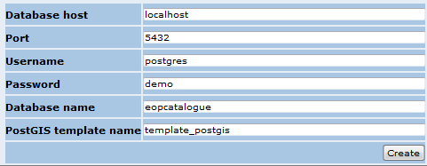
Click on Create
The database has now been created. Select Service management-->Create a new service
Select the create Catalogue service section
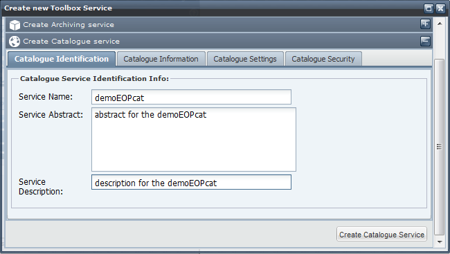
Enter the service name and the Abstract and description. Then select the Catalogue Information tab
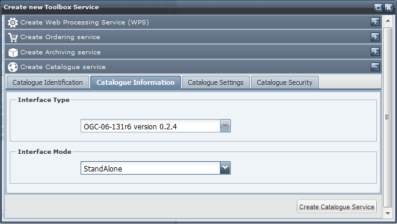
Select the OGC-06-131r6 - OGC® Catalogue Services Standard 2.0 Extension Package for ebRIM Application Profile: Earth Observation Products as interface type and StandAlone as Interface mode. Then click on CreateCatalogueService
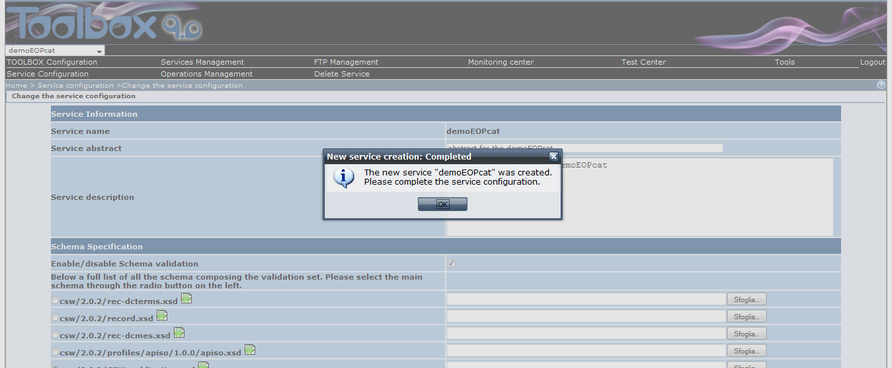
The service is created. Click on OK and go to the end of the page
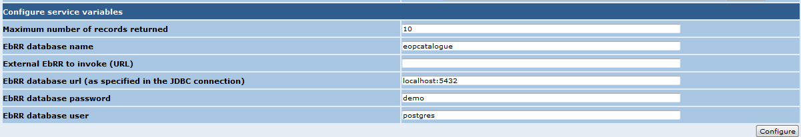
In the Configure service variable section set the parameters as specified in the image above. Then click on Configure.
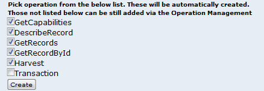
Select the operations as specified above then click on Create.
The catalogue service is now deployed and ready to be populated. Make sure that the service is selected and select Tools-->Harvest file from filesystem
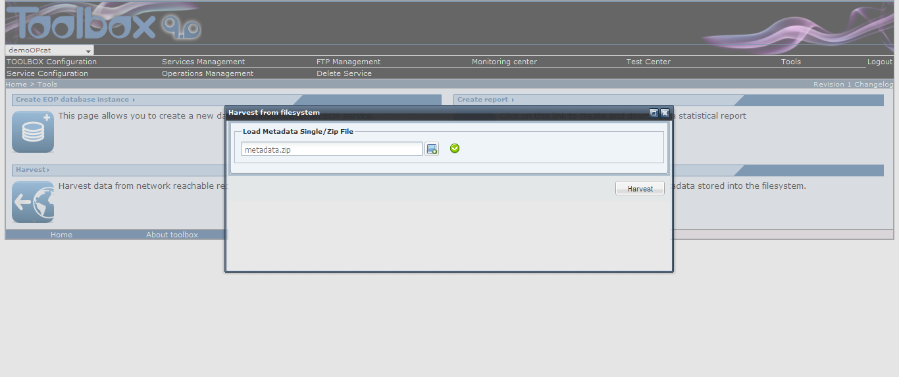
Browse the file system and select the metadata.zip file then click on Harvest. The zip file contains 14 metadata. The file is harvested in the catalogue and a pop up window reports the results of the harvesting process. If the number of metadata harvested is less than the number of metadata to harvest check the log file.
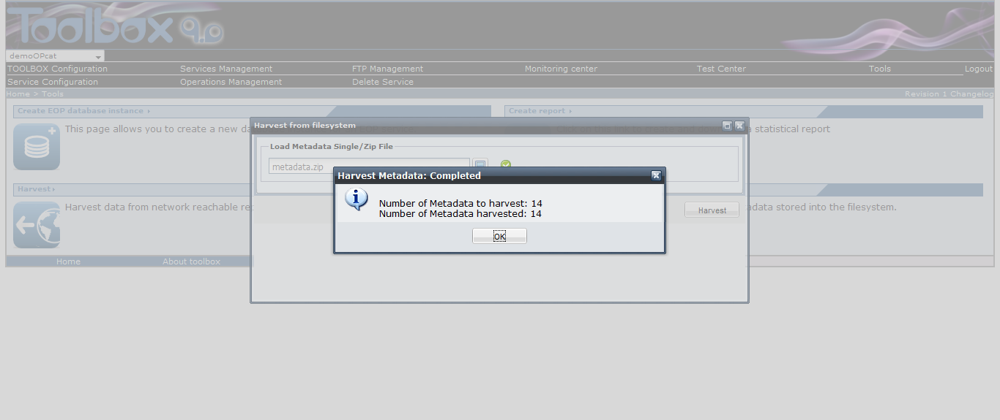
Now the catalogue is ready and the metadata can be discovered. To test the catalogue created go on the Test Center section

Select the Toolbox Application Client
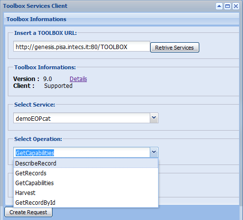
In the Toolbox Information section enter the URL of the Toolbox hosting the service you want to test (it should already be set with the correct URL) then click on Retrieve Services. The client connects to the Toolbox and populate the Select Service drop down list. Select the service you want to test. The client connects to the Toolbox and retrieve the list of the available operations.
Testing the GetCapabilities operation
Select the GetCapabilities operation and click on Create Request.
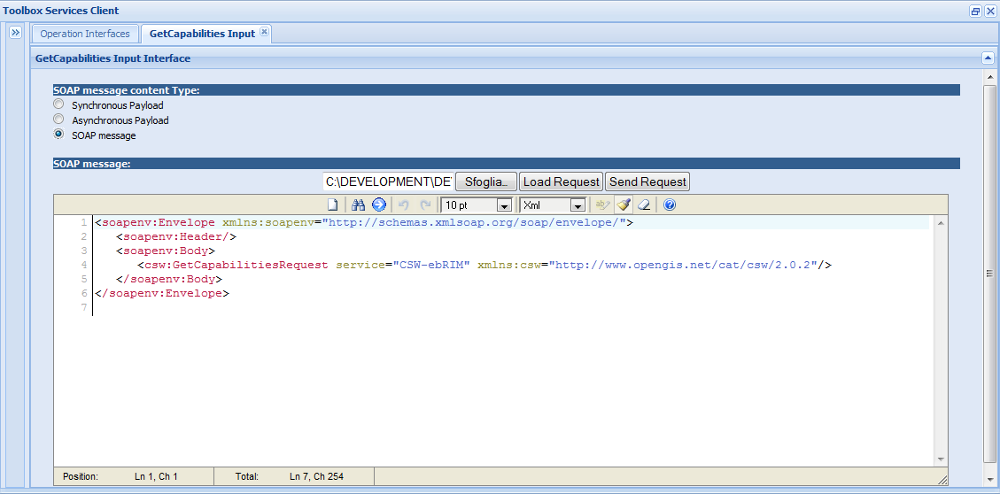
In the GetCapabilities Input tab load the GetCapabilites_Request.xml file, select the SOAP Message option then click on Send Request
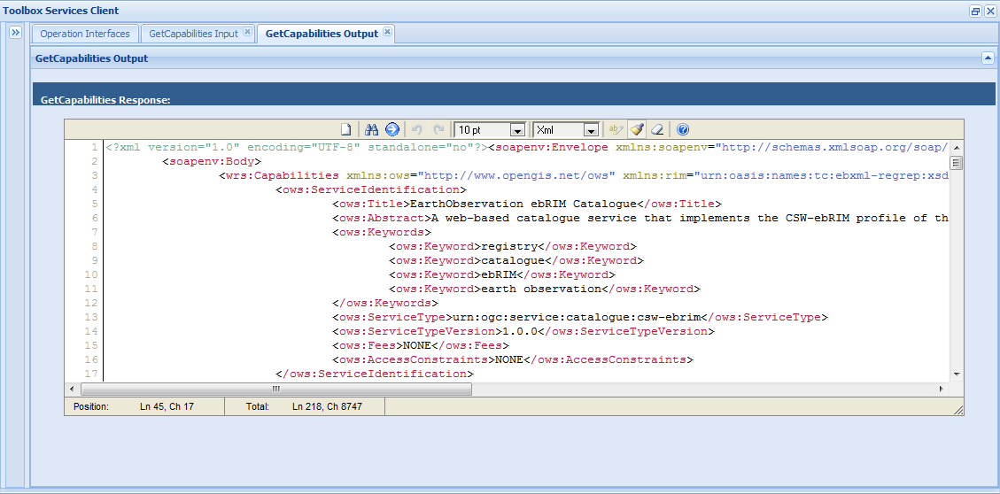
The client sends the request to the service and displays the response in the GetCapabilities Output tab
Testing the GetRecords operation
Go back to the Toolbox Information section and select the GetRecords option in the Select Operation drop down list then click on Create Request
In the GetRecords Input tab load the GetRecords.xml file, select the SOAP message option then click on Send Request
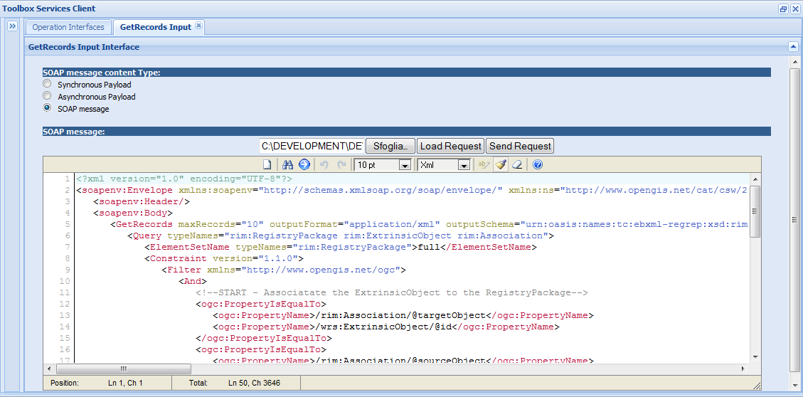
The client sends the request to the service and displays the response in the GetRecords Output tab
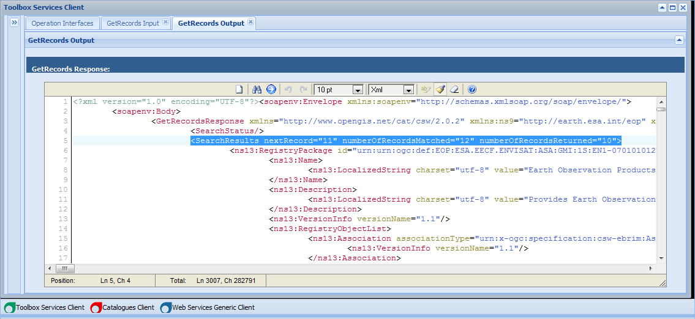
The number of record matched by the query should be 12, the number of records retuyrned should be 10.
Testing the GetRecordById operation
Go back to the Toolbox Information section and select the GetRecordById option in the Select Operation drop down list then click on Create Request
In the GetRecordById Input tab load the GetRecordById.xml file, select the SOAP message option then click on Send Request
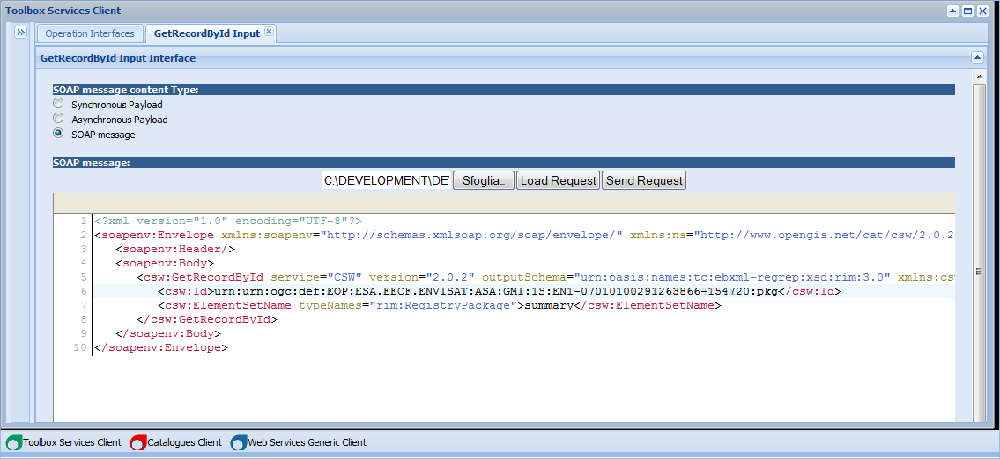
The client sends the request to the service and displays the response in the GetRecordById Output tab
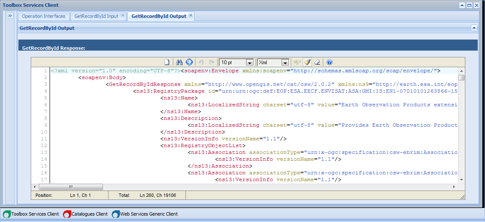